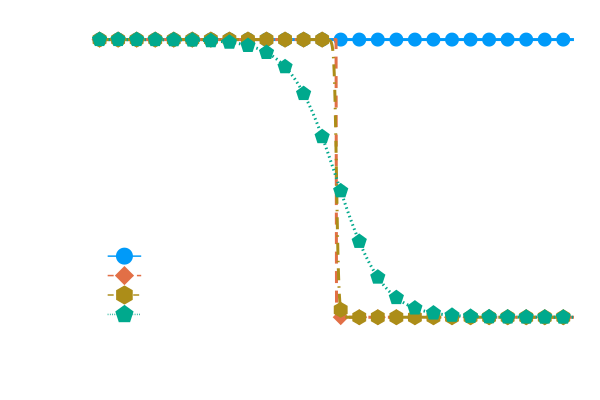
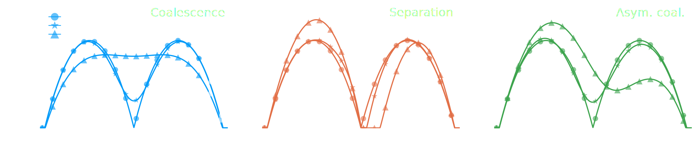

Lattice Boltzmann in the wild
from gas dynamics to complex flows
CFD at different scales

D. Raabe, Modelling Simul. Mater. Sci. Eng., 12 2004
The Boltzmann equation
\[\partial_t f + \boldsymbol{\xi}\cdot\partial_{\mathbf{x}}f + \frac{\mathbf{F}}{\rho}\cdot\partial_{\boldsymbol{\xi}}f = \Omega(f) \] Evolution equation of a distribution function $f(\mathbf{x},\boldsymbol{\xi}, t)$ \[ [f] = \frac{kg~s^3}{m^6}\] T. Krüger et al., The Lattice Boltzmann Method: Principles and Practice, 2016The Collision operator

The Collision operator
Dominated by two-body collisions of uncorrelated particles\[\Omega(f) = -\frac{1}{\tau} (f-f^{eq})\] P.L. Bhatnagar, E.P. Gross, M. Krook, Phys. Rev., 93 (3) 1954
Moments
Moments of $f(\mathbf{x},\boldsymbol{\xi}, t)$\[\rho(\mathbf{x}, t) = \int f(\mathbf{x},\boldsymbol{\xi}, t)d^3\boldsymbol{\xi},\quad \rho(\mathbf{x}, t)\mathbf{u}(\mathbf{x}, t) = \int \boldsymbol{\xi}f(\mathbf{x},\boldsymbol{\xi}, t)d^3\boldsymbol{\xi}\] P.L. Bhatnagar, E.P. Gross, M. Krook, Phys. Rev., 93 (3) 1954
One and one is one or two
Swalbe.jl
“Weeks of coding have saved me hours of thinking.”
\[\partial_t h + \nabla \cdot (h \mathbf{u}) = 0\\ \mathbf{u} \approx \frac{1}{\nu \alpha(h)}\left(-gh \nabla h -\frac{1}{\rho_0}h\nabla p + \color{tomato}{\mathbf{F}}\right) \\ \partial_t h \approx \nabla \cdot \left(\frac{h^3}{3\mu}\nabla \color{tomato}{p}\right)\] S. Zitz et al., JOSS, 7(77) 2022, S. Zitz et al., PRE, 100(3) 2019
Swalbe.jl
“Ideas can be implemented and tested quickly with a two dimensional system....”
\[F_{\gamma} = \frac{3}{2}\partial_x\gamma\]
\[p = \gamma\partial_x^2 h + \Pi(h)\]
\[\Pi(h) = K(\theta,\gamma)f(h)\]
S. Zitz et al., arXiv, 2022
Scaling laws
R. Borcia & M. Bestehorn, Langmuir, 29(14) 2013
Scaling laws

\[ p_c \sim \gamma\kappa \\ p_i \sim \rho (h_0/t)^2 \\ h_0 \sim t^{2/3} \] \[\tau = \sqrt{\rho R_0^3/\gamma}\]
A. Eddi et al., PRL, 111(14) 2013
Marangoni flows

- Constant value
- Heaviside - step
- Smoothed step \(\tanh(x,w)\)
Marangoni flows
R. Borcia & M. Bestehorn, Langmuir, 29(14) 2013
Maragoni flows
Understanding Separation


Understanding Separation
\[\gamma/\mu \sim h_0/(2\mu)\partial_x\gamma \\ h_0 \sim \gamma/(2\partial_x\gamma)\\ \tau_s^{2/3} \sim \gamma/(2\partial_x\gamma)\\ \tau_s \sim (\partial_x\gamma)^{-3/2}\]
S. Zitz et al., arXiv, 2022
Conclusion
“If the only tool you have is a hammer, it is tempting to treat everything as if it were a nail.”
- Lattice Boltzmann is a mature CFD tool
- Similar to any other method there are limitations
- Linear learning curve
Thank you!
Questions? üßê